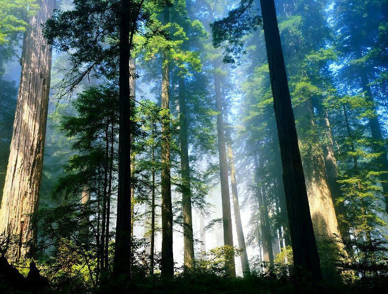
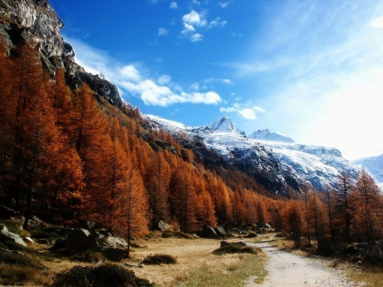
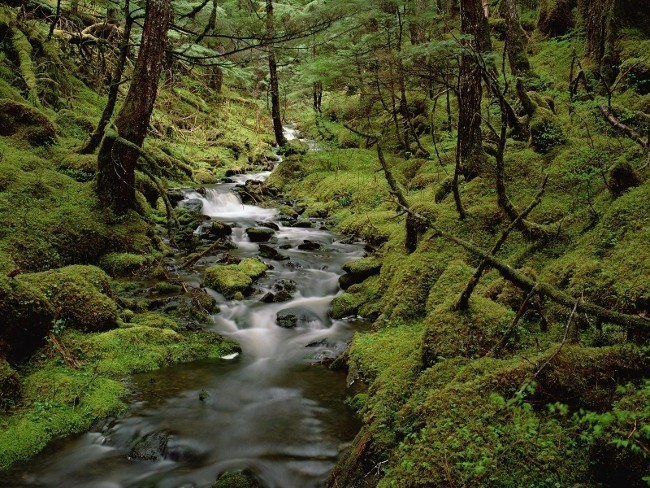

Zhruba měsíc po Ukrajině jsme s Tchoříky vyrazili zase do přírody. Tentokrát ne požitkářsky, ale čistě pracovně. Jelo se na Jizeru - na dřevo.
Na Jizeře jsme byli zatím dvakrát - vždy v zimě, na běžkách, a za tu dobu jsme tam spálili spoustu dřeva, takže jsme museli urovnat náš malý dluh. Naše brigáda měla začít už v pátek a díky tomu jsem se krásně ulil ze školy. Vyrazil jsem autobusem do Klatov, kde měl být na Rybníčkách sraz těch, co to mají ke Klatovům blíž než k Horažďovicím. Sešli jsme se tam tři - já, Kryštof a Klára. Po chvíli čekání konečně přijel červený tranzit a v něm Jenda, Michal a spol., čímž se naše parta skoro zkompletovala. A tak jsme po kratší době byli zase společně na cestách.
Při cestě se Ujo (Jenda) a Michal seznamovali s moderními trendy. Kromě rádiových hitů, co se nedají poslouchat, teď letí mimo jiné také kapela Tleskač. Zkuste si najít něco na YouTube, uvidíte sami. Nakonec Michal pustil nějaké pěkné country, které museli ostatní přehlušit zesílením svých empétrojek do sluchátek.
Určil jsem si další věc, kterou si nekoupím. K mobilu přibyl do seznamu MP3 přehrávač. Nevím proč, ale chytil jsem proti těmto hračičkám averzi. To jen tak mimochodem.
První zastávka byla v Praze. Jenda tam měl nějakou práci a my ostatní museli nakoupit zásoby na víkend. Nevěřili byste, kolik toho devět Tchoříků spapá. Nakonec jsme našli Tesco a vzali jej útokem. To, že se k nám do košíku dostala láhev pana Jelínka raději nebudu zmiňovat. Michal toto rozhodnutí okecával svými střevními potížemi.
Pak zas naskákat do auta a rychle z přeplněné Prahy, dál, dál na sever. A teď až do Josefova Dolu. Tam nás čekala první prácička. Jáni babička potřebovala porazit jeden smrk a tak Ujo vytáhl svou motorovku Stihl a šlo se kácet.
Vše šlo lehce, strom byl nakonec dole, všichni živí, větve ořezané, strom rozkouskován. Jediný problém byla jeho nejtlustší část, která ležela přes potok a se kterou bychom nepohnuli ani za rok. A tak jsme ji tam nechali ležet.
Pak jsme byli pozváni na kafe a buchtu. Babička se rozpovídala a my radši pomalu rychle odjeli, protože se rýsovalo ořezání dalších čtyř - pěti stromů.
Teď jsme nejeli daleko. Jen dolů do údolí, k autobusové zastávce Jozefáče. Očekávaný autobus měl přijet až za chvíli, přesto se hned množily narážky, že Lenku, která měla přijet tímto autobusem ze Strakonic, pustili k volantu a teď jsou někde v pangejtu.
Protože jsme chtěli večer pohádku, museli jsme na dětské hřiště a pěkně si hrát. Málem jsme vylámali houpací koníčky a psíky, zničili houpačky, zranili místní děcka a jak bývá naším dobrým zvykem, patrně jsme pohoršili domorodce naším "skotačením".
To už tu ale byl autobus a tím byla naše parta konečně celá a my se mohli vydat na cestu skoro poslední - ke Kůrovci, pod Jizeru. U Kůrovce jsme nahodili batohy, vzali do rukou potřebné nástroje a začali, už po tmě, stoupat vzhůru. Nevím, zda jste už někdy v horách Jizerských byli, pokud ne, určitě se tam někdy podívejte, stojí to za to. Zjistíte, že většina živého porostu je méně než metr vysoká, je tam spousta suťovišť a mrtvých stromů. Tento stav se sice pomalu zlepšuje, bude to ale ještě chvíli trvat.
Pokud se tam tedy někdy vydáte, zjistíte, že to není terén, ve kterém by se dobře chodilo mimo stezky. Obzvláště ne v noci. Pádů bylo hodně, ale přežili jsme to bez zlámaných nohou či žeber.
Zalezli jsme do chajdy a pomalu se začali zabydlovat. Historie tohoto srubu je docela zajímavá. Postavili ho asi před 40 lety nadšenci a od té doby tam stojí - patří lesákům, ale starají se o něj horalové a ti do něj také jezdí. Zadarmo, ale za zásluhy.
Večer se zpívalo, jedli jsme sušenky a nakonec se šlo spát. Tak to bývá. Druhý den bylo trochu pod mrakem, což vůbec nevadilo, alespoň jsme se pak horkem nemuseli potit. Při práci jsme se i tak napotili dost a dost. Začali jsme zostra - přenést vysušené dřevo dovnitř, uklidit a nasekat nové. Asi to znáte. Makalo se celé dopoledne a najednou se to tam začalo scházet. Musím si zjistit, kdo vlastně všechno přišel - jeden z příchozích byl horák historik. Byl u toho když se chajda stavěla a také se postaral o krásný dřevěný stůl a postele.
Trochu nám pomohli se dřevem a my si dali pauzu na oběd. Polévku vařila Bětka a musí se nechat byla dobrá. A pak zase na dřevo. Znovu se sekalo, řezalo a nosilo.
Co o tom psát víc? K večeři jsme si dali opečený točený salám na ohni. Měli jsme ho přes dva a půl metru. Měli jste vidět, jak se tvářila prodavačka v Tescu, když jsme si o něj řekli. Když začala být velká zima, zalezli jsme dovnitř. Debatovalo se o všem možném - o dredařích, o zvířátkách zbavených životních potěšeních, o ceně zubů. O těchto věcech se možná debatovalo už včera, to jsou věci, které se motají. Včera se vlastně vyšetřovalo záhadné troubení.
Pak přišly na řadu hádanky. Zjistil jsem potěšující okolnost - nemusím už pracně hledat hádanky nové. Stačí dát ty staré, které už všichni zapomněli. Pár z položených hádanek sem asi někdy taky dám.
Pak se zase zpívalo, jedlo a pilo. Spát jsme šli někdy před prvou hodinou ranní, protože probuzeni tím z lahve od pana Jelínka, spát se nám nechtělo. Na spaní toho bylo málo, na probuzení tak akorát. Spal akorát Pavel, který spal už u našich debat. Chudák, trochu jsme se na něm vyřádili. Hlavně proto, že začal chrápat. Pak se mlaskalo, ucpával se mu nos - nic nezabíralo. Ani vrchol večera, zvednutí víčka spáči, ho neprobral. Vzbudil se, až když jsme přestali hrát a zpívat. Ticho ho probudilo.
Ráno bylo na to, kolik jsme toho naspali, docela pěkné. Sluníčko svítilo, ptáci zpívali. V původním plánu byl výlet - práce bylo ale ještě dost a tak z výletu nebylo nic. Musel se odnosit térák, který byl na staré střeše, dolů do údolí.
Tak trochu jsme se shodli, že učitelština udělá ze slabších jedinců tak trochu pokřivené osobnosti a z velkých osobností se stanou ještě větší. Kdyby mne teď slyšelo příbuzenstvo, patrně by si řeklo, že pálím do vlastních řad. Bohužel je to velká učitelská pravda.
Asi nejpoutavější bylo vyprávění Uja o jeho chemikáři někde na střední. Prý vypadal jako prase, opravdu tučný, obličej jak vepřík - i ouška měl prý tlustá. Ze začátku to s ním měli hodně zlé. Nějak si s ním nesedli a tak dostávali čtyřky pětky bez mrknutí oka.
Záchrana přišla, až když jim někdo ze starších a zkušenějších poradil, jak se na pana profesora musí. A tak připravili jitrničku s bramborem na stůl. Když profesor vešel do třídy a všiml si připravené dobroty, byla krásně vidět jeho změna v obličeji. Prý se úplně rozplýval a prohlásil něco jako: "To jste nemuseli, já už jsem snídal."
Jak se ale dalo čekat, neodolal, posadil se na kraj stolu a upejpavě přikusoval. A pan profesor prý dokázal krásně vyprávět. "Pane profesore, vyprávějte."
A on vyprávěl - o tom, jak byl s vnoučátky sbírat houby, o tom jak navštívil hrad, o tom co měl k snídani. Dovedu si představit, že všechno tohle bylo mnohem zábavnější, vtipnější a poutavější než říkají ve škole nám. ke konci roku pan profesor rozdal jedničky a dvojky a s takovým smutným otcovským tónem řekl: "Víte, že to nejde. Nemůžete všichni dostat jedničky a dvojky. Musím vám někomu dát trojku.", prohlásil smutně.
Pár takových, pro které byla trojka na vysvědčení krásná, se ochotně přihlásili. Asi někdo takový, jako je u nás Kuba. Takoví se najdou vždycky. Docela by mne zajímalo, jestli pan profesor Šmíd také rád jí.
Každý měl asi hodně co na toto téma říct, jak už jsem tu asi nedávno psal, bojuje s tím každý, ale stejně nikdo nepřijde na to, jak to změnit.
To mi trochu (hodně málo) připomíná hádanku, kterou jsem překvapivě neříkal toho večera já, ale Jáňa. Rozvířila se na ní bouřlivá diskuze, asi hlavně proto, že byla nejasně položená - sama o sobě je to hádanka zajímavá a stojí za to, abych jí věnoval samostatný článek.
Už tady tedy byla neděle, poslední den svobody v horách. Snášeli jsme dolů térák ze staré střechy a pár další předmětů, jako třeba stará kamínka, hasicí přístroj a podobně. Prostě a jednoduše staré haraburdí.
To nám zabralo dopoledne. K obědu jsme si dali těstoviny se sýrem a se skvělou omáčkou - pochvala pro kuchaře, tentokrát jsme si co se jídla opravdu žili. Dokonce i Kryštof - kterému prý doma nedají pořádně najíst a tak už ani neříká, že nemá dost - vypadal trochu nasycen.
Po obědě se uklízelo, pročišťovala se studánka a pak už nastal konečný sestup dolů.
Ještě jsem si vzpomněl na jednu hodně zajímavou událost. Našli jsme "Rudé právo" někdy z roku ‘61. Dovedete si určitě představit, že nás to pobavilo, ale takovým způsobem, kdy člověk myslí na to, co to tu bylo a ježí se mu při tom chlupy. Teď hodně lituji, že jsem tam ty noviny nechal. Snad se ke mně dostanou.
Z mnou přečtených článků - nedostaly se ke mně totiž všechny, putovaly do archivu jisté osoby s výkřiky: "Tohle je prostě dobrý." - byl nejzajímavější článek o tom, jak probíhal Mnichov (29.9.1938 - takže jsem to četl skoro na výročí). Kdybychom tu už tenkrát, jó, byli všichni komunisti, tak něco takového nedopustíme, svrhneme byrokracii, která nám nedovolila brániti se a pak sami zemřeme pod útokem Němců. Kdo ví, co by bylo správné. Rozhodně to nebylo černobílé - ani samotné Sudety nebyly tenkrát tak moc naše jak se zdálo.
Seběhli jsme z úpatí Jizery zase dolů k Kůrovci, převlékli se do civilu, naskákali do auta a vyrazili na cestu zpět. Ještě jsme se stavili v Josefově Dole a pak jeli dolů na jih. Tři dni jsou na dostání se do správné táborové nálady dost, málo na to, abychom se z ní stihli dostat ven. To se ostatně povede málokdy.
Michal zase pustil migáče, krajina za oknem ubíhala a mně pořád nedocházelo, že už to zase skončilo. Nějak se mi zdálo, že se nestihlo, to co by se stihnout mělo. Že se neřeklo to, co by se říct mělo. Snad to nevadí. Kdo si počká, ten se dočká.
Naštěstí je podzim pěkně rovnoměrně rozložený. Nejdříve byla měsíc po Ukrajině tahle brigáda a za měsíc se chystáme do Cvikova na orientační běh. Asi to bude dost velká sranda, orienťák jsem běžel jednou v životě (a velmi neslavně). Tak třeba to teď bude lepší.
Ani nebudu psát, že mne dneska zase chytala tulácká nálada. Nějak jsem nemohl rozdýchat nepovedený diktát a tak jsem myslel na Kanadu, batoh na zádech a klid od povinné školní docházky. Upustím už ale od těch frázích, že tam ze mě udělají alespoň lepšího člověka a někdy napíšu zase povídku. Tím se trochu vykecám a to se pak člověku uleví na duši i na srdci.
Už nevím jak, ale nějak se Michal dostal k otázce jaké máme plány. Což o to, plánu by bylo, jé je. Radši je ale nechávám hodně volně plavat, za lanka tahá přece Ten nahoře a tak je to lepší.